Me
- Mobile Technical Architect @ Caddify
- London Dev Group organiser
- London's Calling organiser
- Salesforce MVP
- Founder of Shirtforce
Building Custom Slack Apps
- What, Why, and when (and when not to)
- What Slacks offer us
- Architecture
- Building an app with the Apex SDK
What are slack apps, exactly?

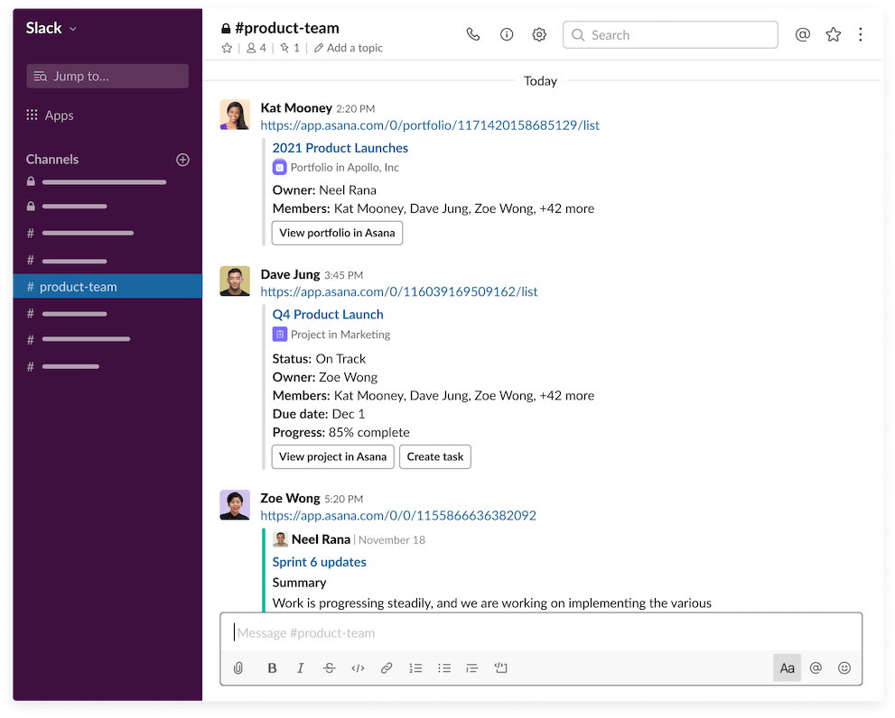
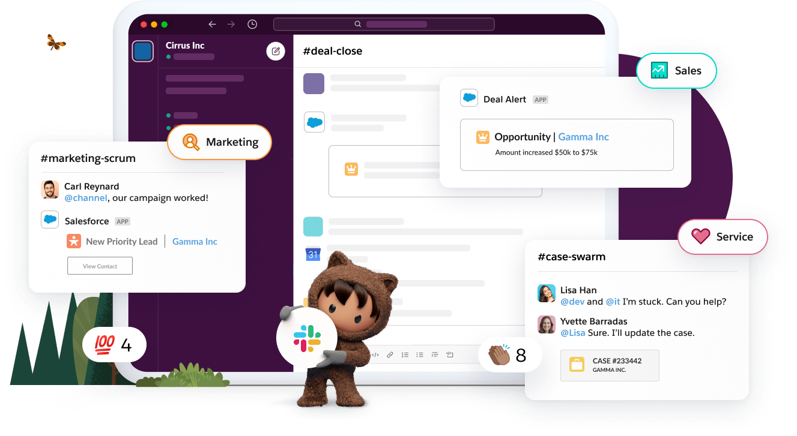
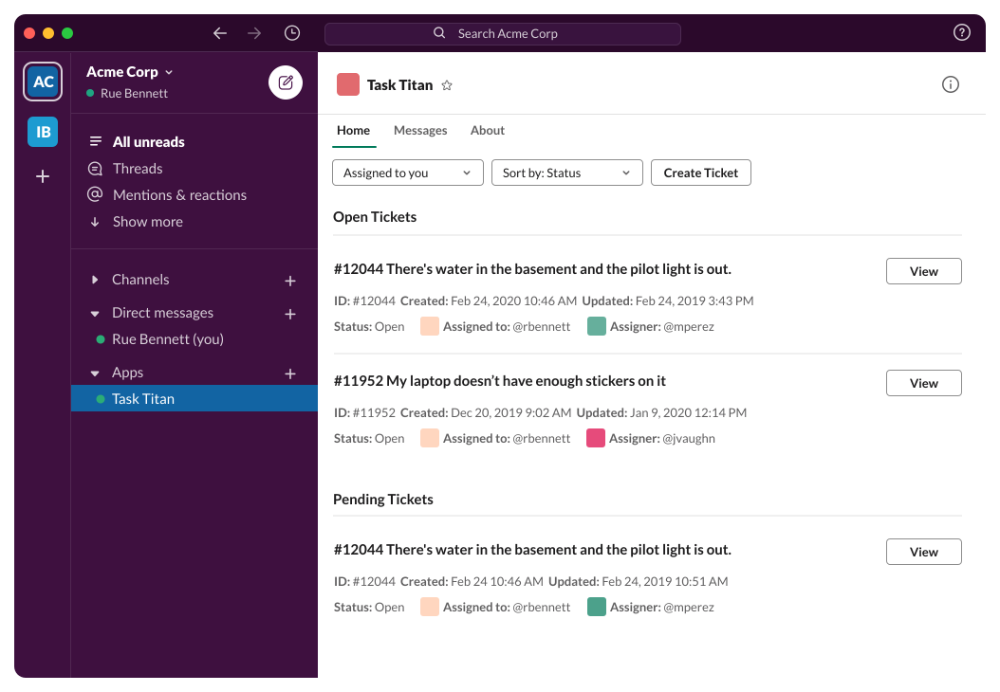
Why, and When
- Cos it's Salesforce now :)
- It's where your users are
- Useful for "Thin" work
- Not for complicated UI / mass of data
Our use case
- Our customers create mobile apps
- They want a dashboard for marketing
- App installs
- Rating
- See latest reviews
What we're after
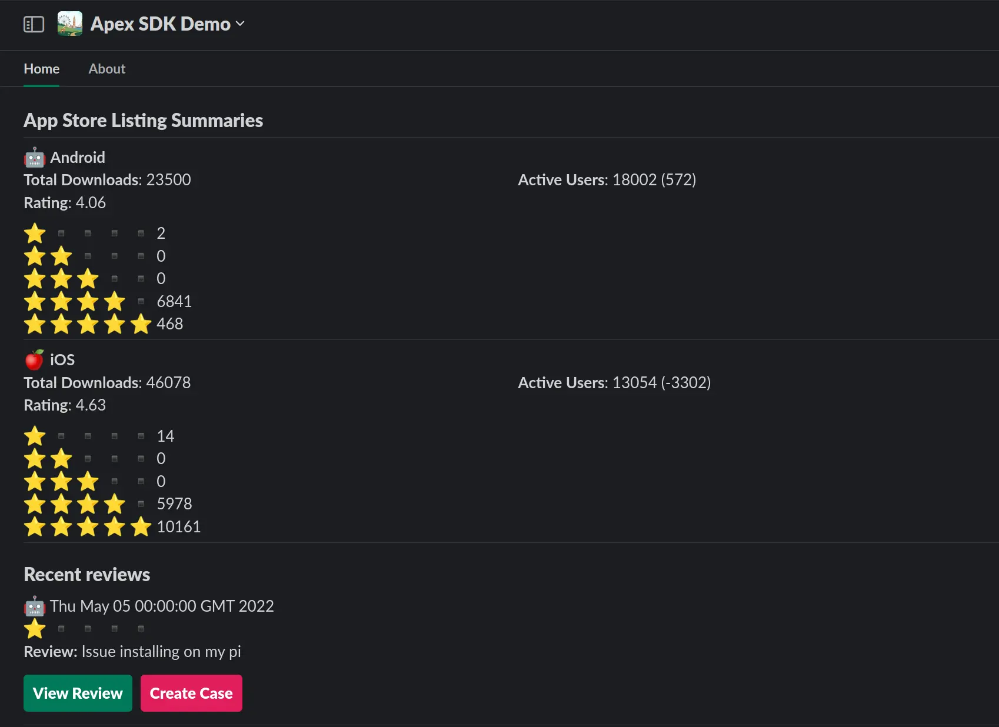Slack Development
-
What do we have to play with?
- UI Elements
- Listeners
- APIs
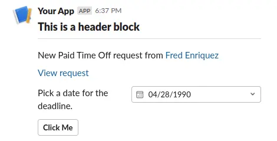
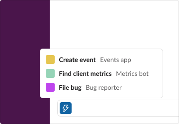
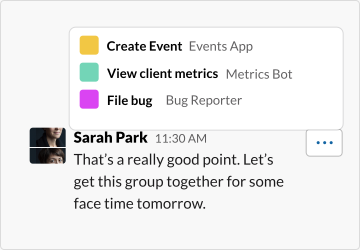
Images: https://dev.slack.com/
Slack Development
-
How do we access these things?
- Block Kit
{
"blocks": [
{
"type": "header",
"text": {
"type": "plain_text",
"text": "This is a header block",
"emoji": true
}
},
{
"type": "divider"
},
{
"type": "section",
"text": {
"type": "mrkdwn",
"text": "New Paid Time Off request from \n\n"
}
},
{
"type": "section",
"text": {
"type": "mrkdwn",
"text": "Pick a date for the deadline."
},
"accessory": {
"type": "datepicker",
"initial_date": "1990-04-28",
"placeholder": {
"type": "plain_text",
"text": "Select a date",
"emoji": true
},
"action_id": "datepicker-action"
}
},
{
"type": "actions",
"elements": [
{
"type": "button",
"text": {
"type": "plain_text",
"text": "Click Me",
"emoji": true
},
"value": "click_me_123",
"action_id": "actionId-0"
}
]
}
]
}
Slack Development
-
How do we access these things?
- Bolt SDK
-
- Receive real time events
- Compose rich messages
- Respond to commands, shortcuts
- And now there's the Apex SDK for Slack
How we used to do things
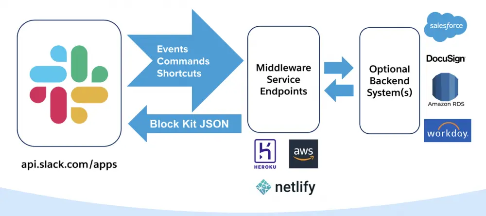Image: https://developer.salesforce.com/blogs/
Soon we'll have Foyer
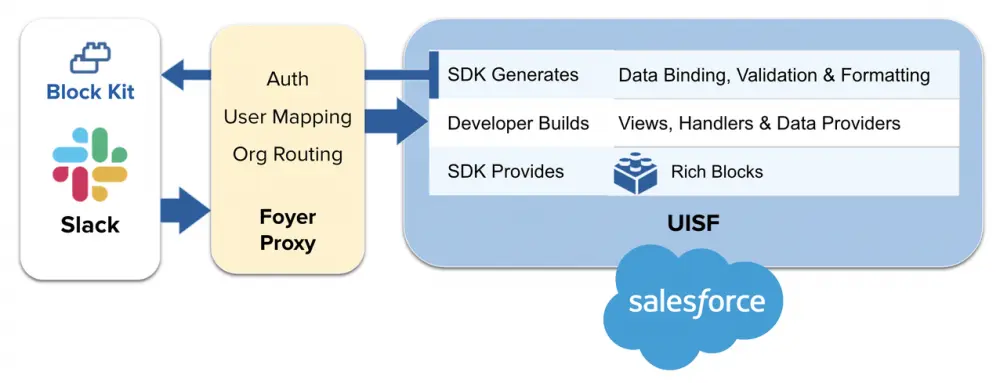Apex SDK for Slack
- No need for Middleware
- User <-> User Auth
- Currently Limited Pilot
- Beta in Winter
- Packageable
- Free to build with
What we're after
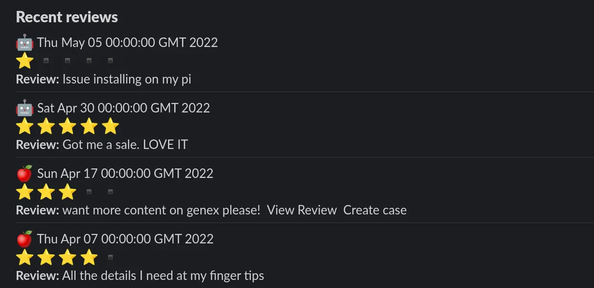Define a SlackApp (and a .slackapp)
description: London World Tour - Caddify Apex SDK Demo
commands:
/apex-hello:
action:
definition: apex__action__SayHello
title: Say Hello
description: A command to say Hello
events:
app_home_opened:
action:
definition: apex__action__EventDispatcherAppHomeOpened
title: Example event handler for app_home_opened
description: The event fires when a user opens the home tab.
App Home Opened - Event Dispatcher
public class EventDispatcherAppHomeOpened extends
Slack.EventDispatcher {
...
public class Handler implements Slack.RunnableHandler {
public void run() {
Slack.ViewReference viewReference =
Slack.View.app_home.get();
...
Slack.ViewsPublishResponse response =
botClient.viewsPublish(req);
}
}
...
}
Data Provider
public with sharing class DataProviderReview {
public static List<Review__c> getReviews() {
List<Review__c> reviews =
[SELECT Id, Name, Date__c, ...
FROM Review__c
ORDER BY Date__c DESC LIMIT 5];
return reviews;
}
}
View Definition
dataproviders:
review:
definition: "apex__DataProviderReview.getReviews"
components:
- definition: home
components:
...
- definition: header
properties:
text: "Recent reviews"
- definition: iteration
properties:
foreach: "{!review}"
foritem: "review"
components:
- definition: section
properties:
text:
text: "{!IF(review.OS__c == 'iOS',\
':apple:', \
':robot_face:')} \n
*Review:* {!review.Content__c}"
type: mrkdwn
And now we have our reviews
Let's add some interactivity
// app_home.view
- definition: actions
components:
- definition: button
properties:
label: "View Review"
style: "primary"
name: "view"
url: "{!view.properties.instanceUrl}/{!review.Id}"
- definition: button
properties:
label: "Create Case"
style: "danger"
name: "create_case"
events:
onclick:
definition: "apex__action__ActionDispatcherCreateCase"
properties:
pushModal: true
reviewId: '{!review.Id}'
reviewOS: '{!review.OS__c}'
reviewContent: '{!review.Content__c}'
Capture some input
// create_case.view
components:
- definition: modal
properties:
title: "Create case"
submitLabel: "Create"
events:
onsubmit:
definition: "apex__action__ActionDispatcherSubmitCase"
properties:
reviewId: "{!view.properties.reviewId}"
components:
...
- definition: input
properties:
label: "Subject"
required: true
components:
- definition: textInput
properties:
placeholder: "Subject"
Insert / Update our records
public class ActionDispatcherSubmitCase extends
Slack.ActionDispatcher {
public Slack.ModalView call() {
Slack.ModalView modalView = submitCase();
return modalView;
}
private Slack.ModalView submitCase() {
Map formData = this.context.getFormData();
Case myCase = new Case();
myCase.Subject = (String) formData.get('Subject');
insert myCase;
String title = 'Record Created';
String body = 'Case was created successfully.';
return MessageModal.getMessageModalView(
title,
new List{ body }
);
}
Conditional component rendering
// app_home.view
- definition: actions
visibility: "{!ISBLANK(review.Case__c)}"
components:
...
- definition: actions
visibility: "{!NOT(ISBLANK(review.Case__c))}"
components:
...
Conditional buttons
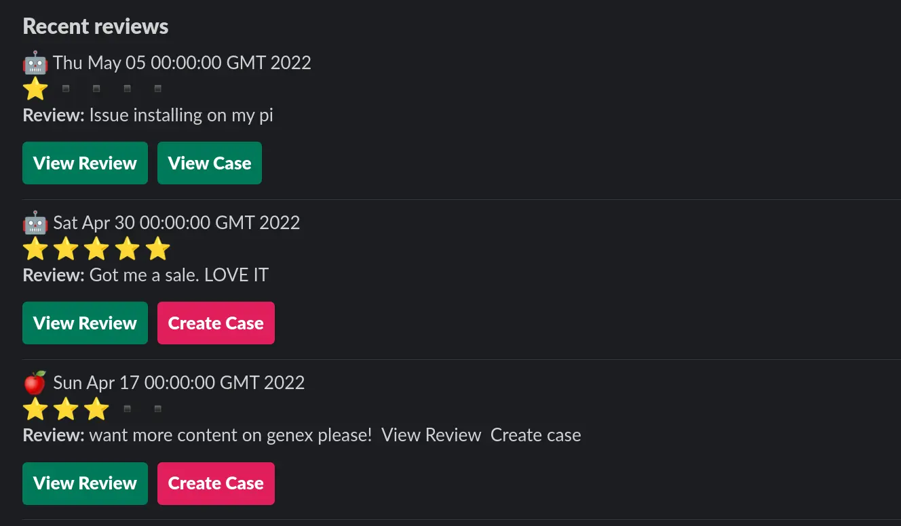Wrap-up
- You can start building today
- Huge focus from Salesforce
- Great set of tools available
- It's going to get a lot easier
- Start thinking about your use-cases
Resources
- CodeLive video serieshttps://www.youtube.com/watch?v=vhb5ZS5T73s
- Salesforce Slack Starter Apphttps://github.com/developerforce/salesforce-slack-starter-kit
- Ready to Fly Apphttps://developer.salesforce.com/blogs/2022/02/building-a-slack-app-that-integrates-with-salesforce-part-1-architectural-overview
- Partner Slack Chatter Grouphttps://partners.salesforce.com/_ui/core/chatter/groups/GroupProfilePage?g=0F94V0000002Bv7
- Slack Dev Docshttps://slack.dev/